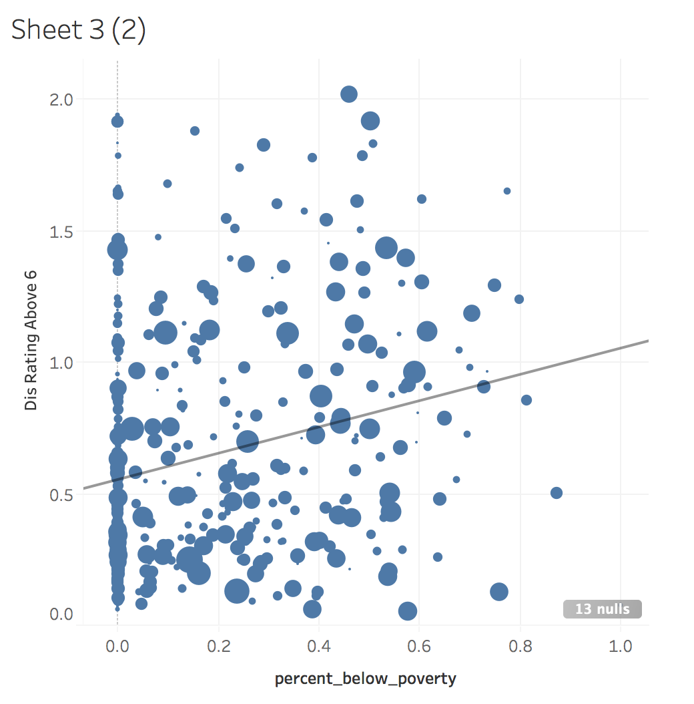
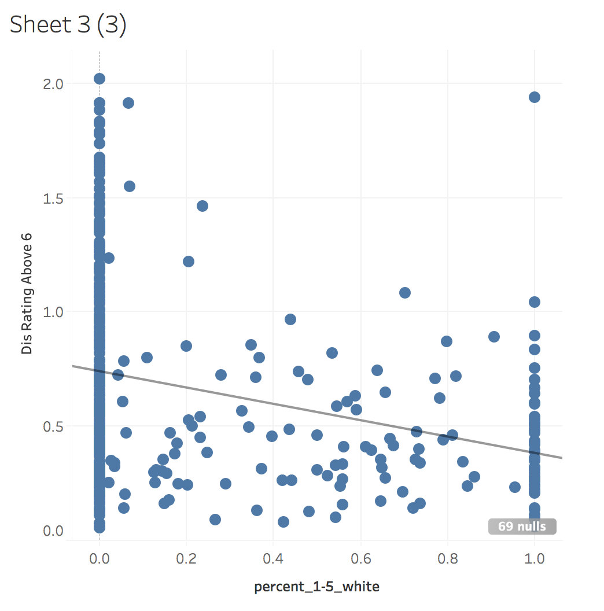
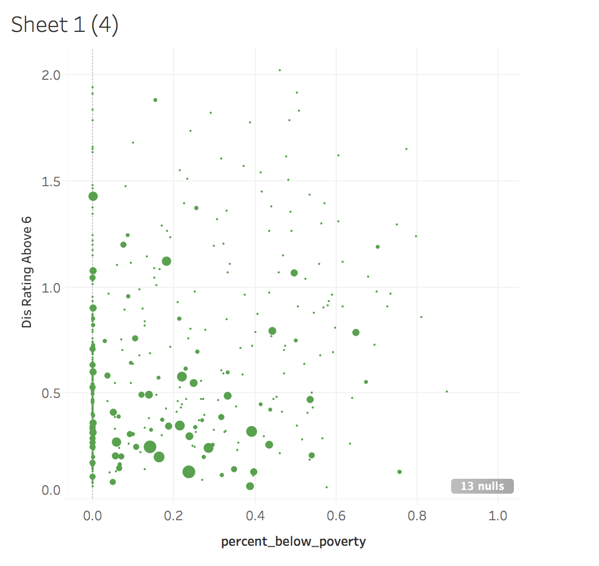
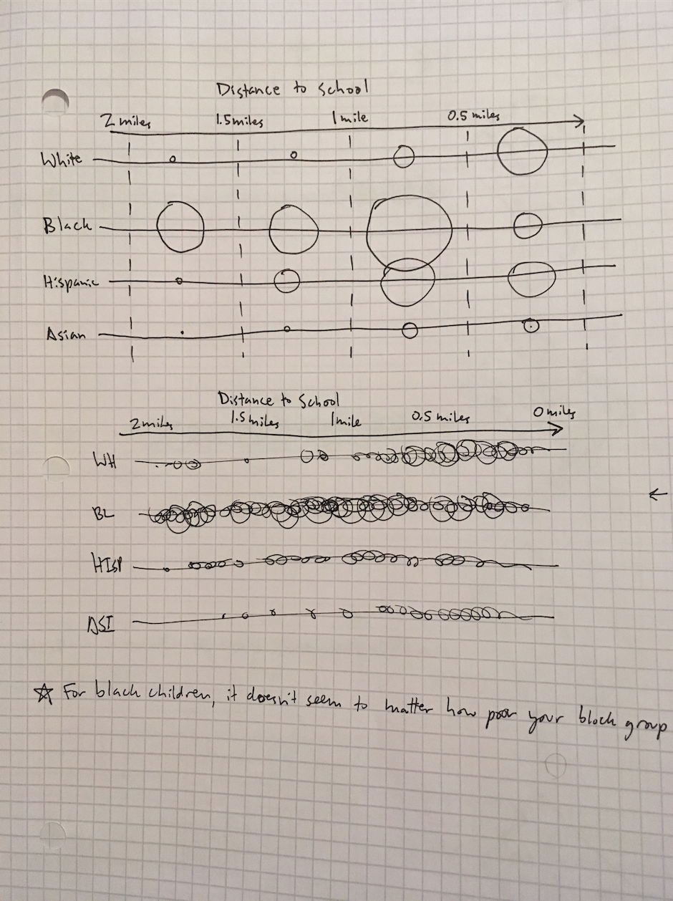
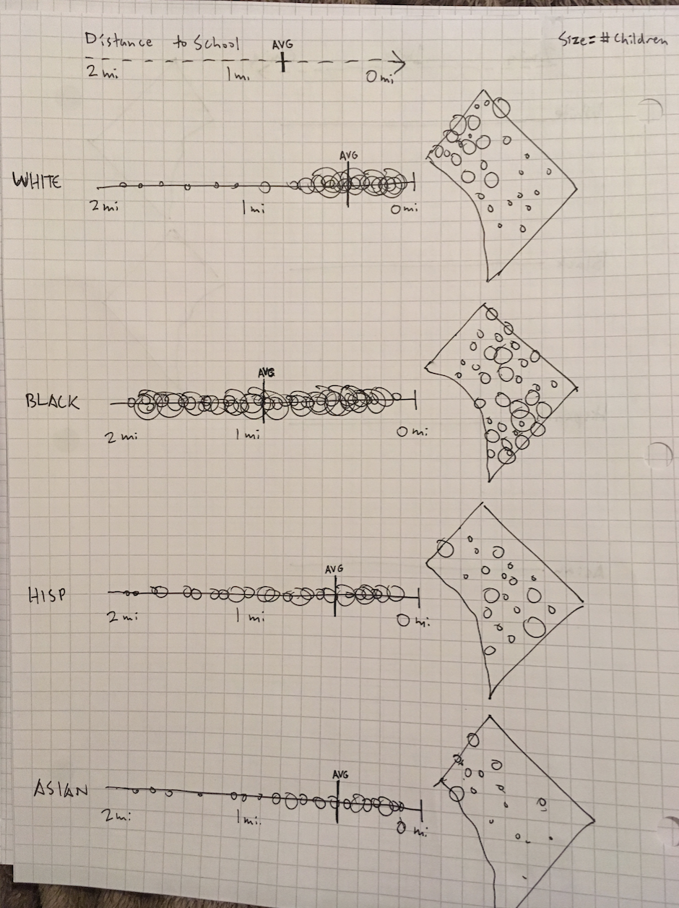

Urban Institute - Data Visualization Design Assignment
2/5/18
Wireframe of an interactive map
Depending on the audience and goals, an interactive map could be an effective presentation, although it relies on the user to make selections in order to find the data stories. Switching between racial groups would result in a dramatic change in the bubbles on the map and dotplot (see multiples below). The map and dotplot could be linked to allow easy interpretation of color values. Charter school and income or poverty level could be involved as filters, to show/hide different Block Groups.

Concept maps
I found the small multiple maps particularly effective at showing the racial disparity, as well as the importance of geography. Depending on the intended user, small multiple maps could be a compelling presentation on their own, at least on larger screens, or assembled into a gif for sharing on social media.

Concept "dotplots"
I like the dotplots as a companion to the map, but they also work well alone, showing the distribution of each racial group, and the dramatic disparity between black children and other groups. A histogram or density plot is more readable, although the dotplots are interesting and pair well with a map using the same bubble approach. One drawback of this approach is the overlapping which obscures data points and affects the color.

Concept histogram

Tableau exploration
I first tried plotting distance against percent of families in poverty, then against percent of children who are white, but did not find compelling relationships. It looked like the most striking disparities were among racial groups and were most apparent in a small multiples approach.
  Initial sketches
 